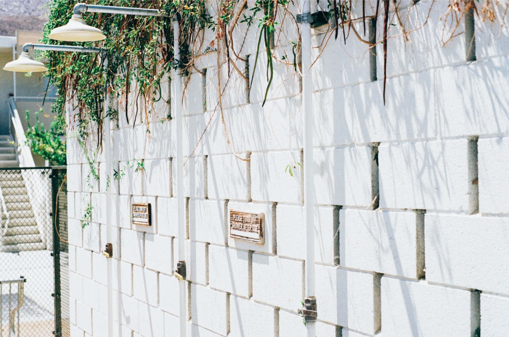

Alice in Wonderland
09/09/14 05:55 Filed in: Lewis Carroll

'Chorus again!' cried the Gryphon, and the Mock Turtle had just begun to repeat it, when a cry of 'The trial's beginning!' was heard in the distance.
'Come on!' cried the Gryphon, and, taking Alice by the hand, it hurried off, without waiting for the end of the song.
'What trial is it?' Alice panted as she ran; but the Gryphon only answered 'Come on!' and ran the faster, while more and more faintly came, carried on the breeze that followed them, the melancholy words:—
The King and Queen of Hearts were seated on their throne when they arrived, with a great crowd assembled about them—all sorts of little birds and beasts, as well as the whole pack of cards: the Knave was standing before them, in chains, with a soldier on each side to guard him; and near the King was the White Rabbit, with a trumpet in one hand, and a scroll of parchment in the other. In the very middle of the court was a table, with a large dish of tarts upon it: they looked so good, that it made Alice quite hungry to look at them—'I wish they'd get the trial done,' she thought, 'and hand round the refreshments!' But there seemed to be no chance of this, so she began looking at everything about her, to pass away the time.
'Chorus again!' cried the Gryphon, and the Mock Turtle had just begun to repeat it, when a cry of 'The trial's beginning!' was heard in the distance.
'Come on!' cried the Gryphon, and, taking Alice by the hand, it hurried off, without waiting for the end of the song.
'What trial is it?' Alice panted as she ran; but the Gryphon only answered 'Come on!' and ran the faster, while more and more faintly came, carried on the breeze that followed them, the melancholy words:—
'Soo—oop of the e—e—evening, Beautiful, beautiful Soup!'
The King and Queen of Hearts were seated on their throne when they arrived, with a great crowd assembled about them—all sorts of little birds and beasts, as well as the whole pack of cards: the Knave was standing before them, in chains, with a soldier on each side to guard him; and near the King was the White Rabbit, with a trumpet in one hand, and a scroll of parchment in the other. In the very middle of the court was a table, with a large dish of tarts upon it: they looked so good, that it made Alice quite hungry to look at them—'I wish they'd get the trial done,' she thought, 'and hand round the refreshments!' But there seemed to be no chance of this, so she began looking at everything about her, to pass away the time.